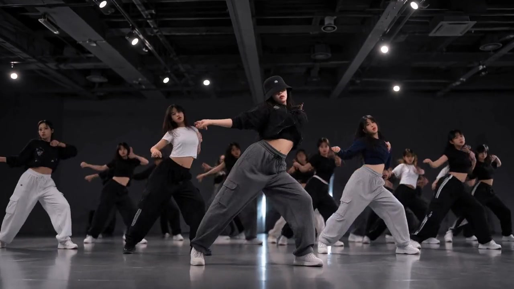

Rehearsal video feedback for dance teams
Feedback that lands on the count.

⟷ 00:01–00:02✎ SketchOpen
@Maya reach all the way out on the arm hit. Match the center’s line.
HKHope Kim Coach
↻ Loop this part👍 3Resolve ✓💬 1
Insights · last 30 days
Notes fixed82%↑ 9%p
Time to fix2.4d↓ 1.1 days
Take 1Take 2Take 3
✓Squat on 3, all togetherTake 2
✓Spacing in the transitionTake 3
•Back row low on 8Practicing